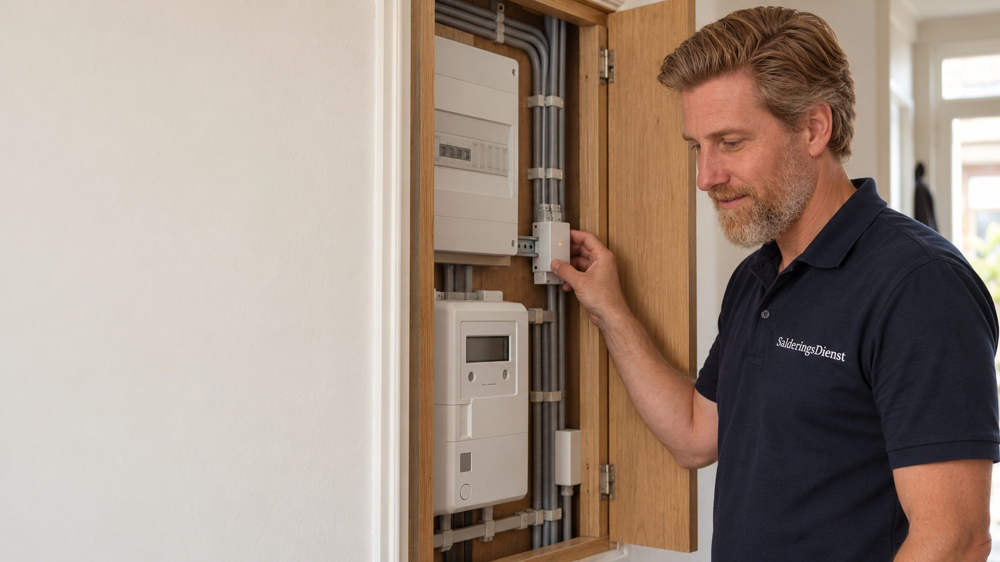
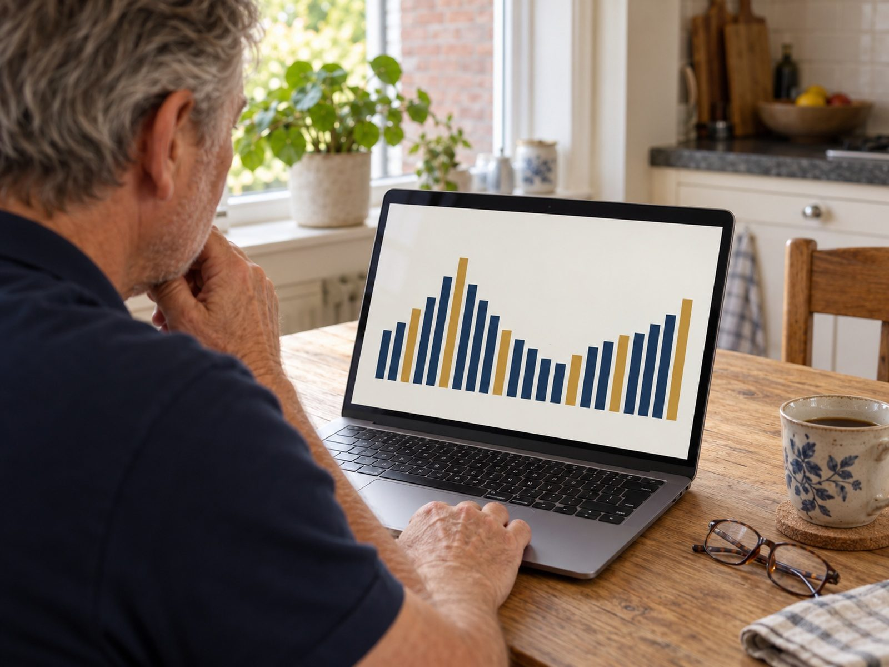

Stroom gebruiken als hij goedkoop is. Vanzelf.
Met een dynamisch contract verschilt de stroomprijs per uur. Slimme energiesturing laat uw batterij, boiler, warmtepomp of auto laden op de goedkope uren en spaart de dure uren uit, zonder dat u er iets voor hoeft te doen. Of dat in uw situatie iets toevoegt, rekenen wij eerst door.
- Advies kosteloos en vrijblijvend
- Werkt met batterij, boiler, warmtepomp en laadpaal
- Inzicht via de app, installatie door gecertificeerde partners

Zo stuurt het systeem een gewone dag.
De sturing kijkt vooruit naar de uurprijzen van morgen en naar de zon die verwacht wordt, en plant daarop wat wanneer stroom gebruikt.
-
Nacht 03:00
Goedkoop laden
In de goedkope nachturen laadt de sturing de batterij bij, verwarmt de boiler en laadt de auto. Alleen zoveel als morgen nodig is, op basis van de verwachte zon.
-
Ochtend 07:30
Dure uren overslaan
Rond het ontbijt is stroom vaak duur. Wat 's nachts al is geladen of verwarmd, hoeft nu niet van het net. De batterij vult het verbruik aan.
-
Middag 12:30
Eigen zon eerst
Is er zonne-overschot, dan gaat dat naar de batterij, de boiler of de auto in plaats van naar het net. Op zonnige dagen is er 's nachts dus minder te laden.
-
Avond 19:00
De piek uit de batterij
Koken, verlichting en televisie vallen in de duurste uren. De batterij levert, en pas als die leeg is koopt u in. Bij een hoge avondprijs kan de sturing ook terugleveren als dat loont.
Illustratief verloop bij een dynamisch contract. Wat het bij u per jaar oplevert, hangt af van uw apparaten, uw verbruik per uur en de prijsverschillen in uw contract; dat rekenen wij in het adviesgesprek door. Handel op de onbalansmarkt rekenen wij bewust niet mee: die opbrengst is niet gegarandeerd.

Wat u krijgt.
Een klein kastje in de meterkast, de koppelingen met uw apparaten, en instellingen die passen bij uw contract.
De sturing haalt elke dag de uurprijzen van uw leverancier op en plant daarop het laden en ontladen van de batterij. U stelt niets in; u ziet achteraf wat er is gebeurd.
Een boiler, een warmtepomp voor warm water en een laadpaal kunnen hun werk verschuiven naar goedkope uren. Dat levert vaak al winst op voordat er een batterij aan te pas komt.
U ziet per uur wat is geladen, geleverd en verbruikt, en tegen welke prijs. Zo controleert u zelf of de sturing doet wat de doorrekening voorspelde.
Niet elke batterij, omvormer of laadpaal laat zich aansturen. Bij de schouw bekijken wij wat u heeft en wat er nodig is om het te koppelen. Dat staat vooraf in de offerte, niet achteraf op de factuur.
Wat er bij u te sturen valt.
Sturing verdient alleen iets als er iets te verschuiven is. Hoe meer van uw verbruik kan wachten op een goedkoop uur, hoe meer het oplevert.
Lees over vast of dynamisch na 2027 Laat uw situatie doorrekenen
Soms is ons advies: niet nodig.
Slimme sturing klinkt als iets wat iedereen moet hebben. Dat is het niet. Dit zijn situaties waarin wij het afraden of uitstellen.
-
U heeft een vast contract en wilt dat houden
Zonder uurprijzen is er geen goedkoop en duur uur om tussen te schuiven. Dan doet sturing weinig meer dan uw eigen zonnestroom beter benutten, en dat kan een batterij alleen ook.
-
Er is niets te verschuiven
Geen batterij, geen boiler, geen warmtepomp en geen auto die thuis laadt: dan kan de sturing alleen verlichting en koelkast zien, en die laten zich niet verplaatsen.
-
U verwacht winst uit handel op het net
Sommige aanbieders beloven opbrengst uit de onbalansmarkt. Die wisselt sterk en is niet gegarandeerd. Wij rekenen er niet mee en adviseren u dat ook niet te doen.
Ook dan is het gesprek kosteloos, en de doorrekening krijgt u mee op papier.
Wat er in de offerte staat.
Kastje, koppelingen en instellingen staan gespecificeerd. Achteraf komt er niets bij.
-
Schouw van meterkast en apparaten
Welke batterij, omvormer, boiler, warmtepomp of laadpaal u heeft, of die aan te sturen zijn, en wat er in de meterkast nodig is.
-
Sturingskastje en koppelingen
Het apparaat dat de prijzen ophaalt en de sturing uitvoert, met de verbindingen naar uw slimme meter en uw apparaten. Merk en type staan bij naam.
-
Installatie en instellingen
Montage en aansluiting door een gecertificeerde installatiepartner, en de instellingen afgestemd op uw contract en uw dagritme.
-
App en overdracht
Uitleg van de app en een eerste controle na een paar weken: doet de sturing wat de doorrekening voorspelde?
Vragen over slimme energiesturing.
Voor het laden op goedkope uren wel: zonder uurprijzen valt er niets te schuiven. Zonder dynamisch contract kan de sturing nog wel uw eigen zonnestroom beter benutten. Of overstappen voor u verstandig is, bespreken wij in het gesprek; wij verkopen geen energiecontracten.
Ja, als u apparaten heeft die kunnen wachten: een boiler, een warmtepomp voor warm water of een auto die thuis laadt. Met een batterij doet de sturing het meest, omdat die uw hele verbruik kan verschuiven.
Vaak wel, maar niet altijd. Of uw systeem van buitenaf aan te sturen is, hangt af van merk en type. Bij de schouw bekijken wij dat, en in de offerte staat wat er eventueel extra nodig is.
Sommige aanbieders bieden dat aan. De opbrengst wisselt sterk, hangt af van hun contract en is niet gegarandeerd. Wij rekenen er in ons advies niet mee en presenteren het niet als rendement. Heeft u zo'n contract, dan nemen wij het als gegeven mee.
Ja. U stelt grenzen in, bijvoorbeeld hoe vol de auto 's ochtends moet zijn of hoe warm de boiler, en de sturing plant daarbinnen. In de app kunt u altijd ingrijpen.
De sturing werkt met de prijzen die uw leverancier publiceert, ook als die per kwartier gaan gelden of als u van leverancier wisselt. Wat verandert, is hoeveel er te winnen valt; dat hangt af van de prijsverschillen in uw contract.
Staat uw vraag er niet bij? Bel ons op 06 3936 9781 of lees vast of dynamisch na 2027.
Nog … dagen tot 1 januari 2027
Weet wat sturing in uw woning oplevert.
Kosteloos, zonder verplichtingen, en met de doorrekening op papier.